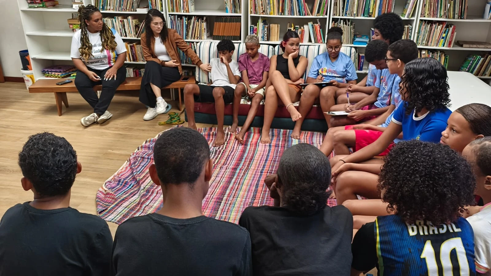
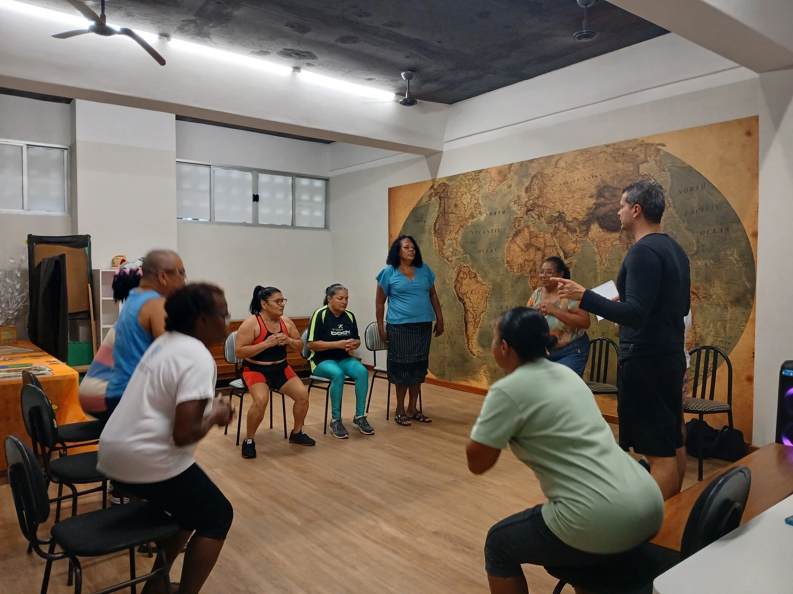

Nossos Projetos
Oito projetos gratuitos para crianças, adolescentes e famílias do Território do Bem
Oito projetos gratuitos de música, esporte, dança, reforço escolar e convivência, para crianças e adolescentes do Território do Bem, em Vitória. Todos acontecem no contraturno da escola, e nenhum cobra nada.
O SECRI trabalha com a ideia de que o desenvolvimento não acontece por uma via só. Uma criança pode chegar pela flauta e descobrir que gosta de matemática; um adolescente pode entrar pelo esporte e sair com um curso de ferramentas digitais no currículo. Por isso os projetos se cruzam: quem está no coral também rema, quem rema também faz reforço.
Arte e cultura

O Som do Bem
Aprender flauta muda o que uma criança acha que é capaz de fazer
Parceria: ArcelorMittal Tubarão
2 a confirmar Conhecer o projeto →
Projeto Travessia
Ballet clássico para meninas que o ballet clássico não costuma alcançar
Parceria: Mover-se Cia de Dança e Academia Duetto Arte e Movimento
5 a confirmar Conhecer o projeto →
Oficina de Canto
Cantar em grupo é aprender a ocupar espaço com a própria voz
Parceria: SETADES - Secretaria de Trabalho, Assistência e Desenvolvimento Social
3 a confirmar Conhecer o projeto →Educação e aprendizagem

Esporte e inclusão

Convivência e bem-estar

Engajando Futuros
Um lugar para o adolescente falar e ser levado a sério
Parceria: SETADES - Secretaria de Trabalho, Assistência e Desenvolvimento Social
3 a confirmar Conhecer o projeto →
Movimento com Qualidade de Vida50+
Envelhecer no bairro sem envelhecer sozinho
Parceria: a confirmar
5 a confirmar Conhecer o projeto →Perguntas frequentes
Todos os projetos são gratuitos?
Que idade é atendida?
50+.